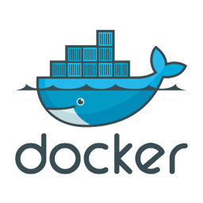
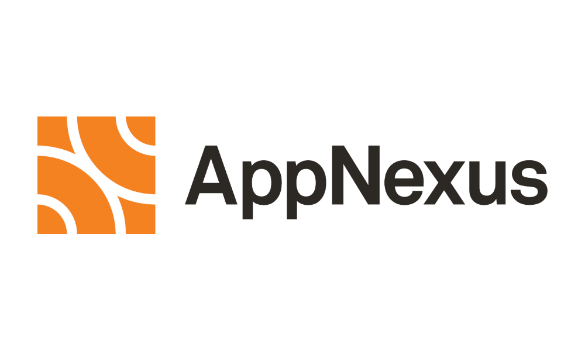

AI Engineering Leader with 20+ years driving technical strategy and building world-class engineering organizations at Fortune 500 companies. Trusted leader who transforms vision into execution—scaling teams from 3→20+ engineers, delivering $3M+ annual cost savings, and architecting Big Data/AI/ML platforms serving 500M+ users. Deep expertise in generative AI, LLMs, and agentic workflows. Known for developing top talent (95% retention, 5+ promotions) and driving operational excellence at scale. Seeking Head of Engineering role to lead AI innovation and organizational growth.
New York University, USA |
|---|
Computer Science |

DockerHub SoundCloud MixCloud
AppNexusSenior Systems Engineer (Big Data), Dec 2015 - Apr 2019